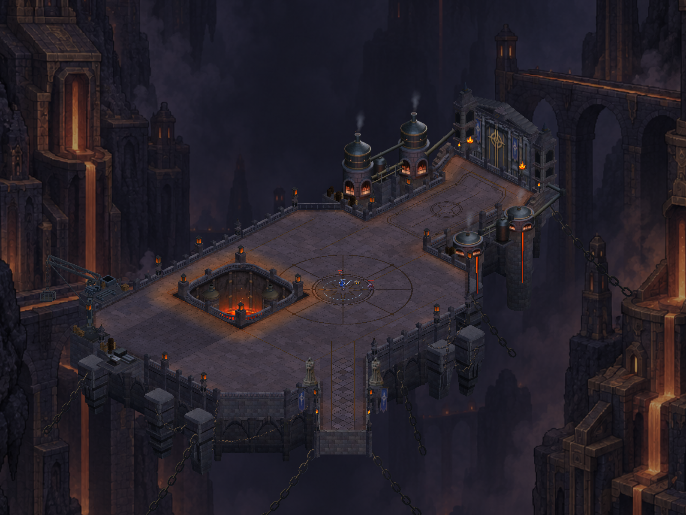
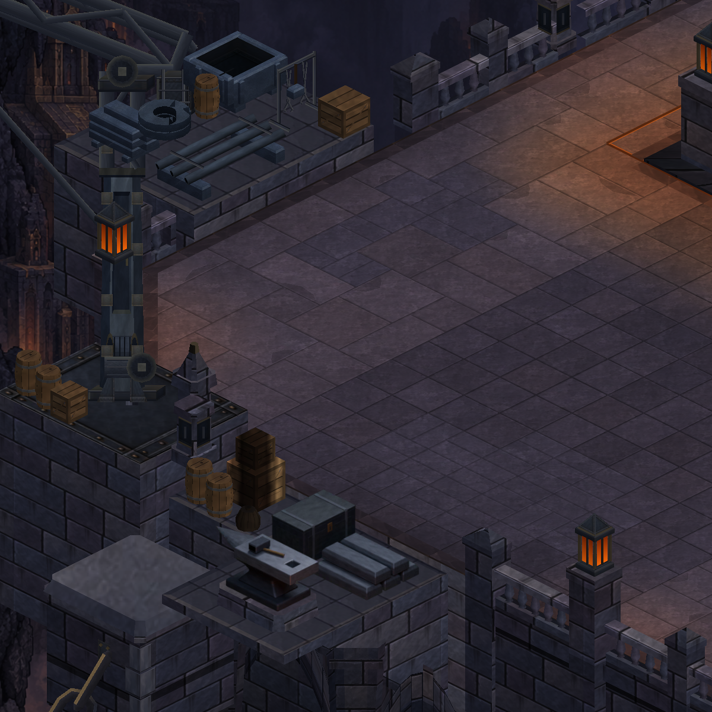
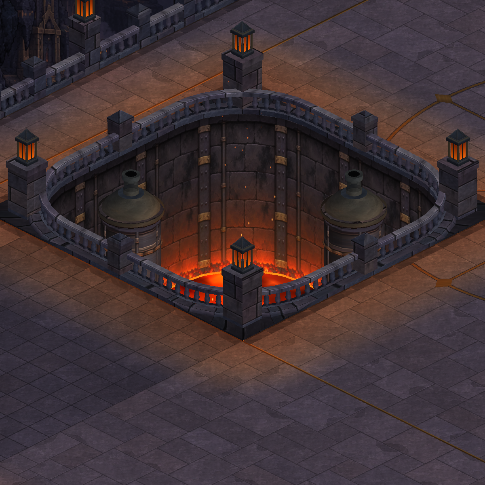
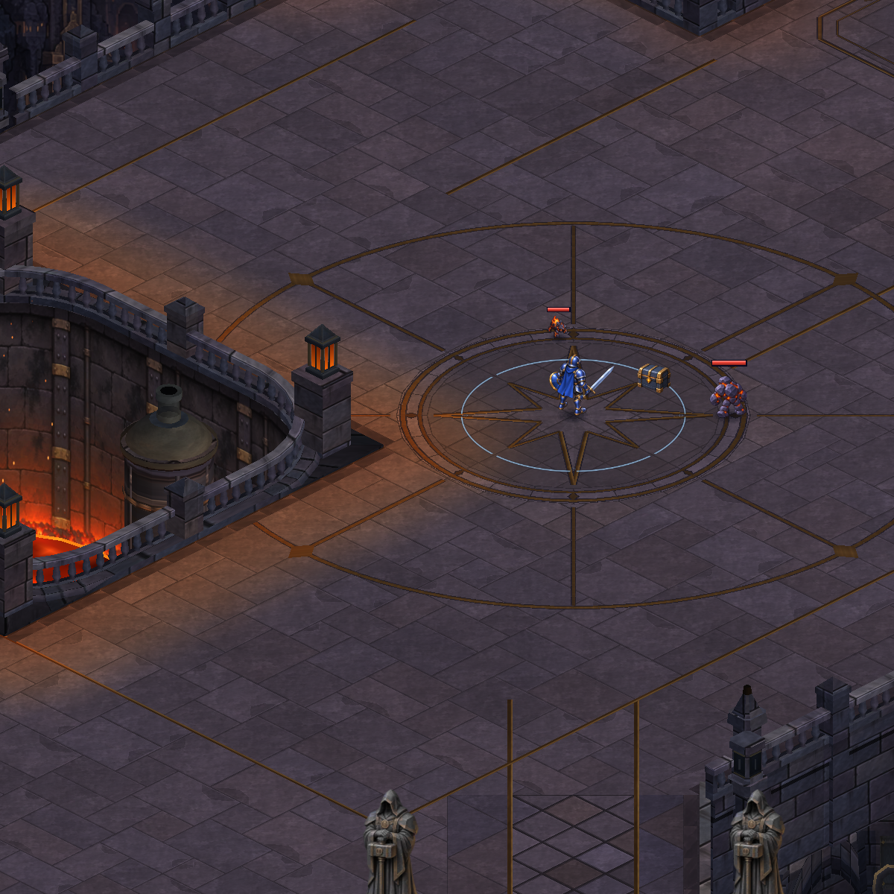
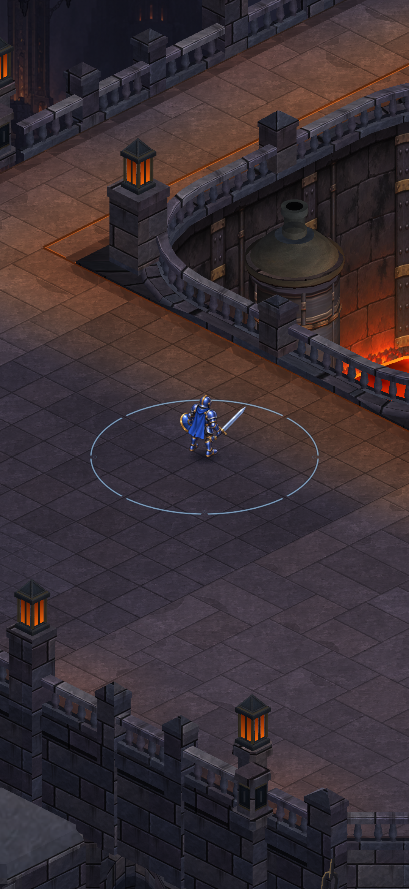
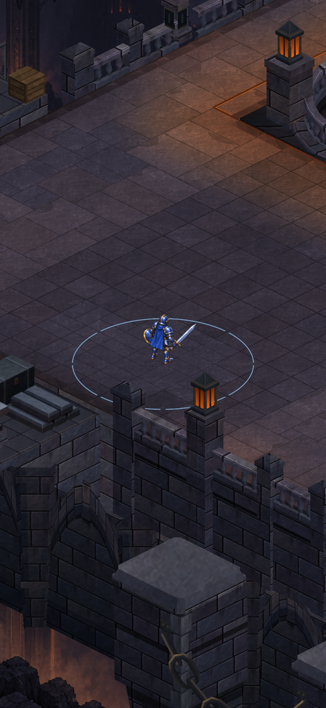
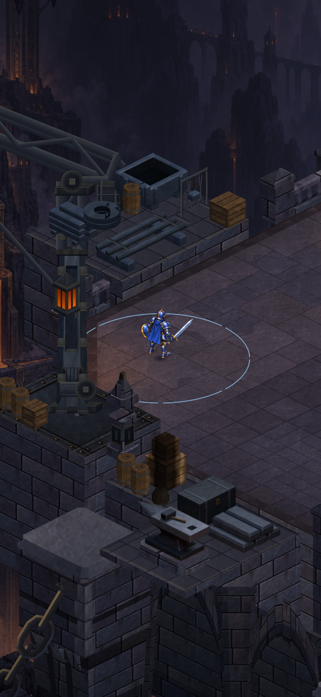

Cryptforge · actual Unity geometry · 09 October 2026
A broader workshop yard.
A connected fortress foundation.
The west court extends beside the pit. The crane and salvage station follow its edge; the foundation joins into a broad masonry body with shorter tapered supports.

After · actual Unity render, review camera size 32. Open the image for full resolution.
6 design unitsadded to the west court
25 renderersbefore and after
107,652 verticesafter · previously 100,968
The same camera is used for both runtime overviews. The approved reference has its own composition and is shown separately. The concept's final material richness remains a longer-term art target.
Inspect the current geometry

Workshop · relocated service assembly beside the widened lane.

Furnace pit · the opening remains anchored within the larger court.

Courtyard · open combat space and central inlay.

Approach · staged hero on a validated walking point, HUD hidden.
Verification status
Actual Unity images have been inspected. All 981 automated tests and Android build passed. Phone installation/review is pending permission to close the owner's current run. These captures are not phone screenshots or a performance benchmark.
Production notesCaptured mesh budgetOriginal reference image
Expanded playable floor
After-only captures at u=-27/v=6 and u=-26/v=15. Same production camera width; staged hero, HUD hidden.

New western floor
Northwest passage981 tests passed; Android build ready. Phone installation is awaiting permission to close the owner's paused run. These new views are Unity captures, not phone footage.
Final build and verification record